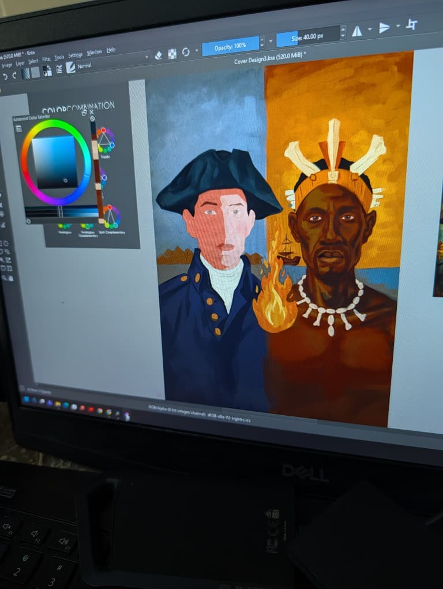

01 | Image
A digital composition in progress, using contrast between figures, histories and cultural references to ask who gets remembered and how.
Ongoing Project | 2026–Present
A digital artwork becoming an augmented-reality encounter about observation, identity and the memories we carry.

The project
Echoes of Existence is a developing digital artwork that will also be experienced through augmented reality. It considers how observation shapes reality, how identity is carried across time and how cultural memory survives through the stories we inherit.
The work is being developed as a layered encounter around image, identity and memory. Further details will be shared when the project reaches a public presentation stage.
Current Development
The project is intentionally being developed in layers so the image remains the anchor while future extensions open new ways of meeting it.
A digital composition in progress, using contrast between figures, histories and cultural references to ask who gets remembered and how.
The work considers how a visual idea can move beyond a single surface and create a deeper encounter with the viewer.
The project will be presented in an appropriate form when its development is ready to be shared publicly.
Why it matters
This project continues Thomas Ogun’s interest in identity, spirituality and cultural memory. It treats technology as a storytelling material while keeping the human image at the centre.
Echoes of Existence remains in development. The studio will release further information as the work is ready for public presentation.